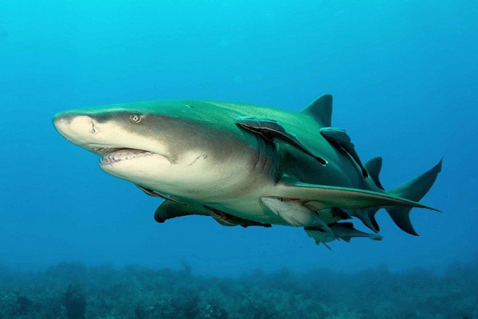

Hiu Paus
Hiu paus (Rhincodon typus) adalah spesies ikan terbesar di dunia, dengan panjang yang bisa mencapai 12 hingga 18 meter dan berat hingga 15-20 ton. Tubuhnya berwarna abu-abu kebiruan dengan pola bintik-bintik putih yang unik, membuat setiap individu memiliki "sidik jari" yang berbeda. Hiu paus memiliki kepala lebar dan mulut besar di bagian depan, tetapi meskipun berukuran besar, hiu paus tidak berbahaya bagi manusia. Giginya sangat kecil, dan sebagai filter feeder, hiu paus makan dengan menyaring makanan seperti plankton, krill, dan larva ikan dari air laut. Mereka membuka mulut lebar-lebar dan menyedot ribuan liter air yang kemudian disaring melalui jaringan khusus di dalam mulut.
Hiu paus dapat ditemukan di perairan hangat dan tropis di seluruh dunia, terutama di perairan dangkal yang kaya plankton seperti di Teluk Meksiko, Laut Merah, pesisir Australia, Filipina, dan Indonesia. Hiu paus cenderung hidup di laut terbuka, tetapi sering terlihat mendekati pantai saat makan. Hewan ini biasanya soliter, meskipun kadang berkumpul di lokasi dengan konsentrasi plankton tinggi. Gerakannya lambat, dan sering terlihat "mengambang" di dekat permukaan air. Hiu paus tidak agresif, dan interaksi dengan manusia umum terjadi di lokasi-lokasi wisata menyelam.
Hiu Martil
Hiu martil adalah sebutan untuk hiu dari famili Sphyrnidae, yang memiliki ciri fisik sangat khas berupa kepala lebar dan pipih menyerupai palu. Bentuk kepala yang unik ini memberi keuntungan dalam berburu mangsa, karena memungkinkan hiu martil memiliki penglihatan yang lebih luas dan kemampuan sensorik yang lebih baik. Beberapa spesies hiu martil terkenal, di antaranya hiu martil besar (Sphyrna mokarran), hiu martil halus (Sphyrna zygaena), dan hiu martil berkepala sekop (Sphyrna tiburo)
Hiu martil adalah predator oportunistik yang memakan berbagai jenis mangsa, termasuk ikan kecil, cumi-cumi, dan krustasea. Beberapa spesies hiu martil juga terkenal karena sering memakan ikan pari. Hiu ini sering berburu sendirian, tetapi kadang-kadang mereka dapat terlihat dalam kelompok besar, terutama saat bermigrasi atau di area perairan hangat. Beberapa spesies hiu martil bermigrasi jarak jauh setiap tahunnya untuk mencari makanan atau tempat berkembang biak..
Hiu Lemon
Hiu lemon (Negaprion brevirostris) adalah spesies hiu yang terkenal dengan warna tubuh kekuningan, mirip warna lemon, yang membantu mereka berkamuflase di perairan dangkal berpasir. Hiu lemon memiliki tubuh besar dan kokoh, dengan panjang mencapai sekitar 3 meter saat dewasa dan berat sekitar 90 hingga 180 kilogram. Mereka umumnya ditemukan di perairan tropis dan subtropis, khususnya di Samudra Atlantik Barat dan Laut Karibia, mulai dari Teluk Meksiko hingga Brasil, serta di beberapa bagian Samudra Pasifik. Hiu lemon sering tinggal di perairan dangkal dekat pantai, terumbu karang, dan muara sungai, tetapi mereka juga mampu menyelam hingga kedalaman sekitar 100 meter.
Pada umumnya, hiu lemon lebih aktif pada malam hari dan berburu secara soliter, meskipun hiu muda kadang terlihat dalam kelompok kecil untuk mengurangi risiko pemangsa. Makanan utama mereka adalah ikan, cumi-cumi, gurita, dan kadang-kadang krustasea. Seperti hiu pada umumnya, hiu lemon memiliki indra penciuman yang tajam dan elektroreseptor ampullae of Lorenzini yang memungkinkan mereka mendeteksi medan listrik mangsa yang bersembunyi di dasar laut. Hiu lemon berkembang biak secara vivipar, artinya anak-anaknya berkembang dalam tubuh induk hingga lahir dalam kondisi hidup. Masa kehamilan mereka sekitar 10 hingga 12 bulan, dan induk betina biasanya melahirkan 4 hingga 17 anak hiu di perairan dangkal yang relatif aman dari predator.